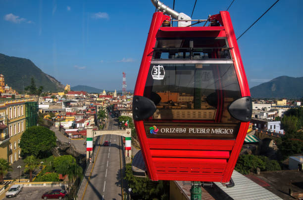

Lugares de Interés en Orizaba
| Imagen | Nombre | Horario | Precio |
|---|---|---|---|
|  | Teleférico de Orizaba | 10:00 - 18:00 | $50 |
 |
Palacio de Hierro | 09:00 - 19:00 | Gratis |
 |
Paseo del Río Orizaba | Abierto 24 hrs | Gratis |
 |
Alameda Francisco Gabilondo Soler | 07:00 - 22:00 | Gratis |
 |
Ecoparque Cerro del Borrego | 08:00 - 18:00 | $20 |
| Puente de la Borracha | Abierto 24 hrs | Gratis | |
 |
Museo de Arte del Estado | 10:00 - 18:00 | $10 |
| Catedral de San Miguel Arcángel | 08:00 - 20:00 | Gratis |